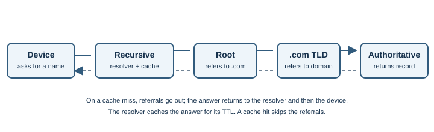
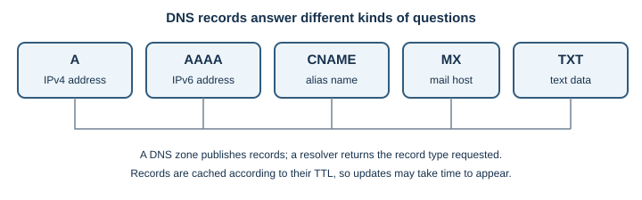
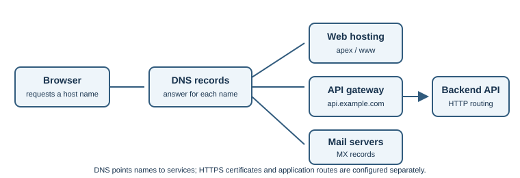

DNS¶
Introduction¶
The Domain Name System (DNS) is a distributed naming system. It lets people
use names such as www.example.com while software looks up records such as
an IPv4 (A) or IPv6 (AAAA) address.
Why does it exist?¶
Numeric addresses are awkward to remember and may change as services move. DNS separates a memorable name from network configuration. It is a hierarchy of independently managed zones, not one central address book.
How does it work?¶
A browser or operating system asks a recursive resolver for an answer. The resolver may already have a cached answer. If not, it follows DNS delegation:
- A root server points it toward the relevant top-level domain, such as
.com. - A top-level domain server points it toward the domain's authoritative servers.
- An authoritative server returns the record for the requested name.
- The resolver caches the answer for its time-to-live (TTL) and returns it to the client.


The client normally asks a recursive resolver; it usually does not contact root servers directly. DNS commonly uses port 53 over UDP or TCP. Traditional DNS is not encrypted in transit. DNS-over-HTTPS (DoH) and DNS-over-TLS (DoT) encrypt the connection to a resolver, but that resolver can still see the query.
Common record types¶
| Record | What it stores | Example use |
|---|---|---|
A |
IPv4 address | Map www.example.com to an IPv4 endpoint |
AAAA |
IPv6 address | Map a name to an IPv6 endpoint |
CNAME |
Another DNS name | Make one name an alias of another |
MX |
Mail exchange host and priority | Route email for a domain |
TXT |
Text data | Publish domain verification or email policy data |
NS |
Name server for a zone | Delegate DNS authority |
CAA |
Certificate issuance policy | Indicate which certificate authorities may issue for a domain |
HTTPS |
HTTPS service binding | Advertise connection information for an HTTPS service, such as supported protocols or an alternate target |
SVCB |
General service binding | Advertise connection information for services beyond HTTP |
If a record has a TTL of 300 seconds, a resolver may reuse the cached
answer for about five minutes. A low TTL can help changes become visible
sooner after caches expire, but it does not force resolvers to discard
existing cached data immediately.
DNS for application domains¶
When deploying a web application, DNS connects the name users type to the hosting platform or service endpoint. A typical setup might include:
| Name and record | Example purpose |
|---|---|
example.com — A or AAAA |
Point the domain to an IPv4 or IPv6 address when the host provides one |
www.example.com — CNAME |
Alias www to a platform-provided hostname |
api.example.com — CNAME, A, or AAAA |
Route API traffic to its host, gateway, or load balancer |
example.com — MX |
Route email for the domain; unrelated to web hosting |
Domain verification — TXT |
Prove domain control to a hosting or identity provider |
This is an illustrative design, not a universal deployment recipe. A DNS
provider may offer an apex-alias feature for the root domain, and hosting
providers specify which targets and record types they support. A DNS
CNAME cannot generally coexist with other ordinary records at the same
owner name; follow the provider's instructions for the domain apex. HTTPS and
SVCB records can advertise service connection parameters, and HTTPS records
can help clients discover HTTP/3 support. Client and resolver support varies,
so these records do not replace the address records and configuration required
for clients that do not use them. They are DNS records, not the HTTPS protocol
or a substitute for TLS certificate validation.
Changing a record changes authoritative DNS data, but resolvers can retain older answers until cached TTLs expire. During a migration, the old and new destinations may both receive traffic for a time. Lowering a TTL well before a planned change can reduce some cache delay, but does not guarantee instantaneous propagation.

DNS selects a destination name or address; it does not configure TLS certificates, application virtual hosts, redirects, or API routing. Those must also be configured at the host, proxy, and application layers.
DNSSEC adds signatures that let a validating resolver check that DNS data matches its signed chain of trust. It does not encrypt DNS queries; DoH and DoT encrypt the connection to the chosen resolver. These technologies address different concerns.
Real-world example¶
When opening https://www.example.com/, the browser may check local caches
before asking a resolver. Once it gets an address, it can attempt a connection
to that server. A DNS answer is not proof the server is available. See
IP addressing and HTTP and HTTPS.
Developer perspective¶
TTL and resolver caches mean a DNS change may not appear everywhere immediately. Troubleshoot name resolution separately from routing, firewall, TLS, and application errors. Multiple DNS answers can distribute traffic, but do not by themselves guarantee health-aware routing. For an application, check that the DNS record points to the intended host and that the host is configured to serve the requested domain name.
Practical example¶
On Windows, run nslookup example.com. On Linux or macOS, dig example.com
shows a query and answer when dig is installed. Both query a resolver; they
do not change DNS records. Another resolver may have a different cached
answer.
To inspect selected record types, use dig example.com A,
dig example.com AAAA, or dig example.com MX. On Windows,
nslookup -type=MX example.com queries MX records. These commands do not
reveal every resolver's cache state or prove that the web service is healthy.
Important terminology¶
- Recursive resolver: service that looks up answers for a client and returns a result.
- Authoritative server: server that publishes records for a DNS zone.
- Record: typed DNS data, such as
A,AAAA,MX, orCNAME. - TTL: how long a DNS response may be cached.
- Delegation: referral from one part of the DNS hierarchy to another.
- DNSSEC: signatures that support validation of DNS data authenticity and integrity.
- Cache miss: a lookup for which the resolver does not have a reusable answer.
Advantages and disadvantages¶
Delegation lets organizations manage their own domains, and caching helps reduce repeated lookups. Caches can temporarily hold old data, and DNS can fail independently of the website it helps locate.
Common misconceptions¶
- A DNS response does not prove the server is healthy.
- Changing a record does not instantly clear every resolver's cache.
- HTTPS protects the web connection; it does not automatically encrypt a traditional DNS query.
- DNSSEC does not hide a query; encrypted DNS does not mean the resolver cannot see the name being requested.
Further Learning & References¶
- Official documentation — MDN (beginner-friendly): DNS introduces the naming system and the role of DNS records.
- Official standard — RFC Editor: RFC 1034, Domain Names—Concepts and Facilities explains DNS design and delegation.
- Official standard — RFC Editor: RFC 9460, SVCB and HTTPS DNS records defines service-binding DNS records.
- Official standard — RFC Editor: RFC 1035, Domain Names—Implementation and Specification describes DNS messages and basic record handling.